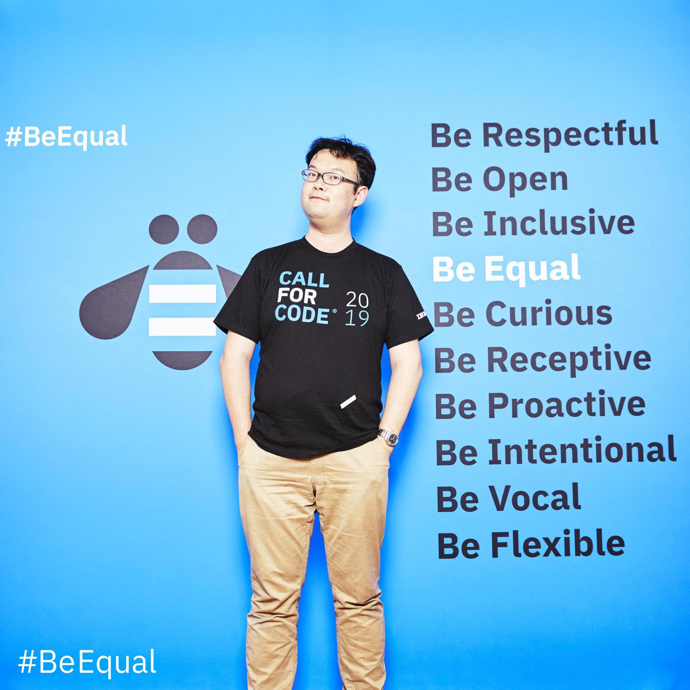
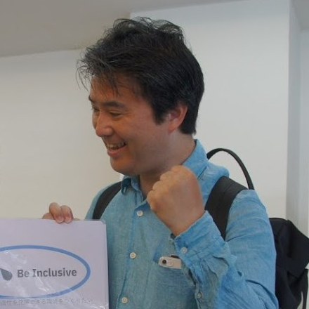

Who's Speaking
IBMのテクノロジーに関するセッションが盛りだくさん！オンラインですので、お好きなセッションを自由にご覧いただけます。

Opening
オープニングメッセージ

Keynote Session
新型コロナウイルス感染症(COVID-19)ゲノム解析の最先端とIBM SARS-CoV-2 Variant Browser
AI
新たな移動体験・都市空間の創造をもたらすAIスーツケース

IBM Cloud
IBM Cloud のPower クラウド基盤を活用した基幹システムのハイブリッド化ご紹介

IBM Cloud
実践 IBM Cloud PowerVS で IBM i

Resiliency
災害対策におけるお客様の様々なご要望をマルっとIBM Cloudで実現！

Closing Session
OpenShift x IBMがもたらすハイブリッドクラウド戦略
Closing
クロージング & After Party
Edge Computing/TAPE
エッジ時代のストレージ(仮)

5G/Edge Computing
5GとEdgeの概要(仮)

Weather/Data
PAIRSから衛星データを使ってみよう

DX
全社視点から「社内DX」を推進するきっかけを見つけよう！

Quantum Computing（Hands-On）
GUIから始める量子コンピューター超入門
Quantum Computing（Hands-On）
リョウコと始める量子コンピューター・プログラミング

RedHat/OpenShift
これから始めるOpenShift とモニタリング（仮）

Serverlesst
IBM Cloud Code Engine が GA される前に Knative を予習しよう
AI
新総理ってどんな人？Watson Discoveryに聞いてみよう

AI
Watson Assistant × SlackBot で、リモートワーク社員を繋ぐ

データ活用（Hands-On）
つないでつないでApp Connect

AI
「LINE お絵描きスタンプ」はこうして作られた。IBM Cloud を使って開発するメリットとは？